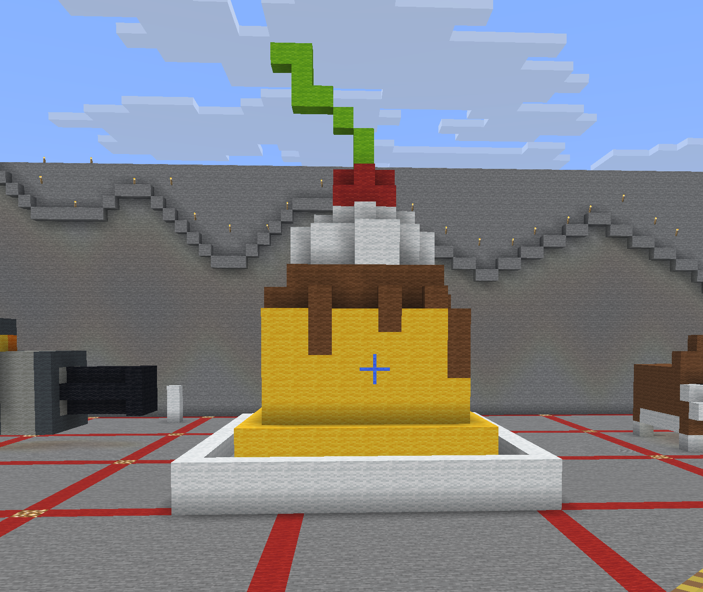

3D Minecraft
For this project I made one of my favorite desserts, which is flan. flan is a very popular dessert in hispanic curlture, as well as in asian culture. it's very significant to me because it reminds me of my grandma's cooking. She makes flan all the time, especially when there's a birthday, so when I see flan it reminds me of her. I also recently learned how to make it, it's very simple and tasty!


the process was a little complicated. First I built the art I wanted to export into Minecraft, then I made it into an STL file, and printed a draft to see what it would look like. Then I printed a final print and pained it afterward!